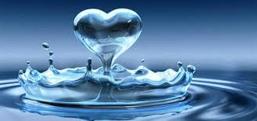

El agua (H2O) es una molécula formada por dos elementos, hidrógeno y oxígeno. Contiene dos átomos de hidrógeno y uno de oxígeno. La molécula del agua es dipolar: tiene un polo positivo por parte del hidrógeno y uno negativo debido al oxígeno. Los dipolos se forman debido al enlace covalente que une a los dos elementos; esto hace que se forme una carga parcial negativa en la parte del oxígeno de la molécula de agua y una carga parcial positiva en la parte del hidrógeno. Puesto que los átomos de hidrógeno y oxígeno en la molécula contienen cargas opuestas, moléculas de agua vecinas se atraen entre sí. La atracción electrostática entre el hidrógeno y el oxígeno en las moléculas adyacentes se llama enlace de hidrógeno. Esta estructura permite que muchas moléculas iguales se unan con gran facilidad, formando enormes cadenas que constituyen el líquido que da la vida a nuestro planeta.